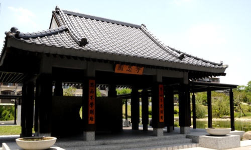
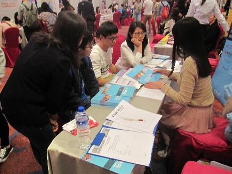
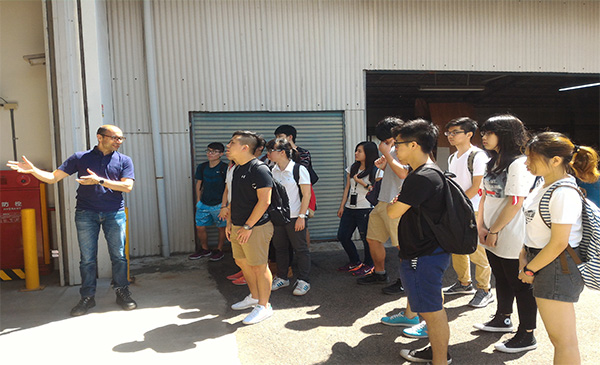

Special of this e-Paper: Feng Chia University and other sister university. Photo by: Unknown.
國際學院招生捷報！菁英薈萃，招生人數全壘打

逢甲大學國際學院選擇名列全球百大的國外名校作為合作夥伴，合設「2年逢甲+2年海外名校」的全新留學模式。無論是「美國普渡大學電機資訊工程雙學士學位學程」、「美國聖荷西州立大學商學大數據分析雙學士學位學程」或「澳洲墨爾本皇家理工大學商學與創新雙學士學位學程」，都吸引很多優質高三生報名。經過激烈的競爭後，目前國際學院招生人數全壘打，學生來自台灣優質高中及東南亞地區頂尖高中。
更多內容
Study World留遊學巡迴教育展 逢甲大學國際合作專班詢問度高

228連假期間，本校國際學院參加2016 Study
World國際留遊學巡迴教育展，於台北、台中、高雄、台南四地與學生家長進行交流，介紹與國外知名大學合作的國際專班，包含電機資訊工程專班（美國普渡大學）、商學大數據分析專班（美國聖荷西州立大學）和商學與創新專班（澳洲皇家墨爾本理工大學）。
更多內容
美國普渡大學教授蒞臨本校 舉辦專題式學習及高效能評量研討會
近年來教育學家發現，以學生為中心的「專題式學習」，相較於傳統上以老師為知識中心的「廣播式教學」，更能啟發學生、讓學生樂於學習。因此本校國際學院與教學資源中心邀請美國普渡大學教授Dr. Brent K. Jesiek於5月23日至25日蒞臨本校主持「專題式學習及高效能評量研討會」，透過演講、教學演示、諮詢等活動，讓本校教師踴躍參與。
更多內容
皇家墨爾本理工大學（RMIT）報導： 逢甲大學來訪 台澳合作擴展全球參與度

RMIT報導：台灣台中逢甲大學國際科技與管理學院院長的造訪，再度提升RMIT的全球連結度！
RMIT商學院最近有貴賓來訪──逢甲大學國際學院院長曾明哲教授。首席副校長安德魯·麥金太爾及副校長伊恩·帕爾默誠摯歡迎曾明哲副院長的到來，共同商討兩校合作項目。
更多內容
國際學院學生挑戰Real Project 協助德商解決風力發電問題

國際學院商學與創新雙學士學位學程大一學生於6月22日參訪德商風電能源技術服務有限公司，針對該公司提出的企業問題擬訂策略及解決方案，並向該公司高層主管進行簡報，學生的專業見解及穩健台風大獲好評，德商風電表示，對於本校學生不僅能掌握公司的根本問題，還能提出他們沒有想過的策略與解決方案，感到非常驚訝與讚賞。因此也邀請學生於下學期共同合作，讓在場學生大為振奮。
更多內容
Study World留遊學巡迴教育展 逢甲大學國際合作專班詢問度高
228連假期間，本校國際學院參加2016 Study
World國際留遊學巡迴教育展，於台北、台中、高雄、台南四地與學生家長進行交流，介紹與國外知名大學合作的國際專班，包含電機資訊工程專班（美國普渡大學）、商學大數據分析專班（美國聖荷西州立大學）和商學與創新專班（澳洲皇家墨爾本理工大學）。
更多內容